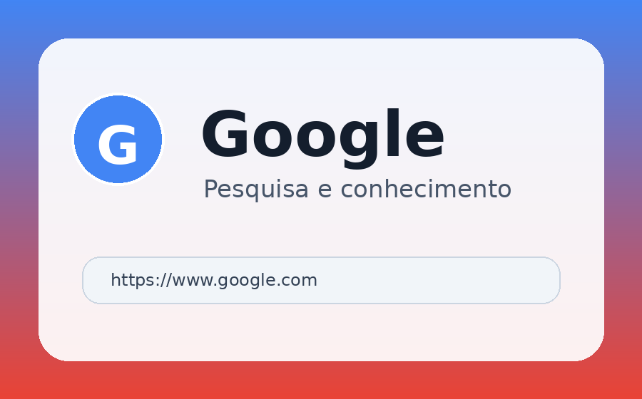
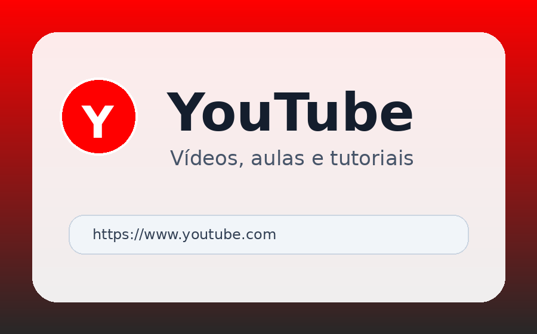
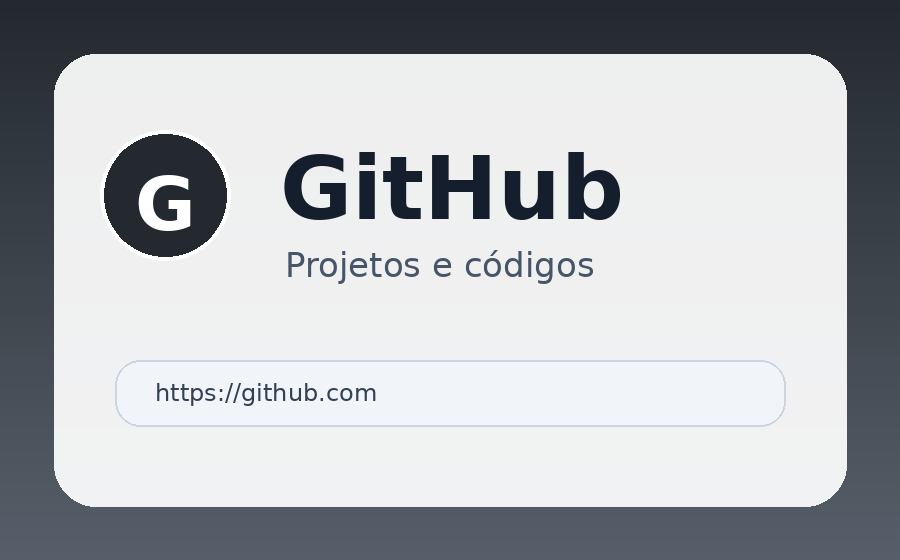
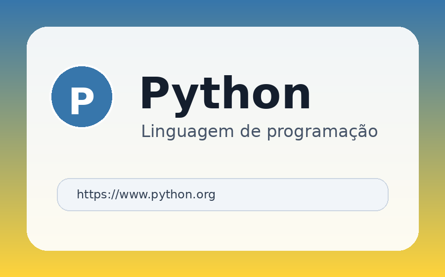
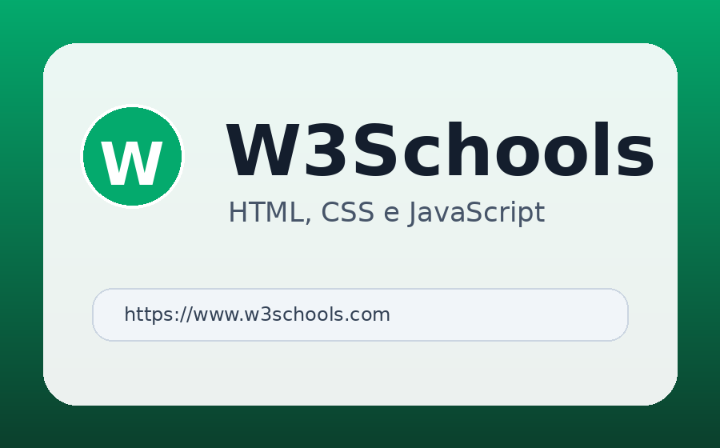

Ferramenta de pesquisa muito utilizada para encontrar informações, notícias, imagens e materiais de estudo.
Acessar GoogleUma página simples em HTML e CSS para organizar sites úteis para estudo, trabalho e lazer.

Ferramenta de pesquisa muito utilizada para encontrar informações, notícias, imagens e materiais de estudo.
Acessar Google
Plataforma de vídeos usada para entretenimento, aulas, tutoriais e conteúdos educativos sobre tecnologia.
Acessar YouTube
Ambiente usado por programadores para armazenar projetos, versionar códigos e compartilhar repositórios.
Acessar GitHub
Site oficial da linguagem Python, com documentação, downloads, novidades e materiais para aprendizagem.
Acessar Python
Site com tutoriais de HTML, CSS, JavaScript e outras tecnologias importantes para desenvolvimento web.
Acessar W3Schools